Motion-space MeanFlow
Direct prediction of clean 3D motion induces an interval-averaged velocity. Kinematic and temporal constraints regularize the generated poses and transitions.
Research project
Long-horizon human motion from text, speech, or music in just a few sampling steps.
† Corresponding authors · ‡ Project Leader

01 / Overview
3D human motion generation plays a crucial role in game development, extended reality (XR), digital humans, and embodied simulation. Beyond motion generation, practical pipelines involve other stages, such as rigging, retargeting, and rendering, making ultra-fast long-term 3D motion generation without compromising quality particularly valuable for real-time interactive applications. Despite promising progress, high-quality long-horizon motion generation under tight inference budgets remains challenging, owing to 2 coupled bottlenecks: (1) generative strategies that require many sampling steps for high-quality 3D motion generation and (2) model architectures with substantial per-step computational and memory costs for long sequences. To address these challenges, we present FlashMotion, a co-designed framework for high-quality long-horizon 3D motion generation under a strict inference budget, covering text-to-motion, music-to-dance, and speech-to-gesture tasks. To enhance trajectory-level efficiency, we introduce a 3D motion-space MeanFlow formulation with kinematic and temporal consistency constraints for few-step generation, together with a time-decayed soft-masking mechanism for temporally coherent motion editing. To improve per-step efficiency, we design a lightweight non-autoregressive BiMamba architecture with condition-guided state selection and AdaIN-based condition fusion mechanism, enhancing cross-modal alignment and generalization to longer motion sequences. Extensive experiments demonstrate that FlashMotion achieves overall state-of-the-art performance in both quality and efficiency across text-to-motion, speech-to-gesture, and music-to-dance generation.
02 / Demo
The full demo follows the original sequence, with chapters for each group of examples.
03 / Method
FlashMotion co-designs the sampling trajectory and the sequence model.
Direct prediction of clean 3D motion induces an interval-averaged velocity. Kinematic and temporal constraints regularize the generated poses and transitions.
Bidirectional state-space modeling processes the sequence non-autoregressively. Condition-guided state selection and AdaIN fusion inject time-aligned conditioning.
The soft mask gradually relaxes fixed-region constraints during sampling to improve the transition between known and synthesized motion.
Generation throughput
Four-step FlashMotion versus the fastest external baseline for each task. Timing covers generation only.
04 / Results
Play comparisons, sampling-step showcases, ablation studies, and motion editing drawn from the demonstration video.
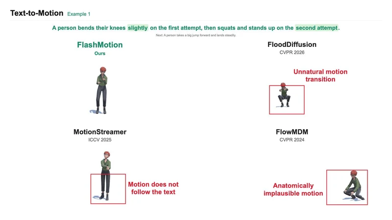
Text-to-Motion · Example 1FloodDiffusion, MotionStreamer, and FlowMDM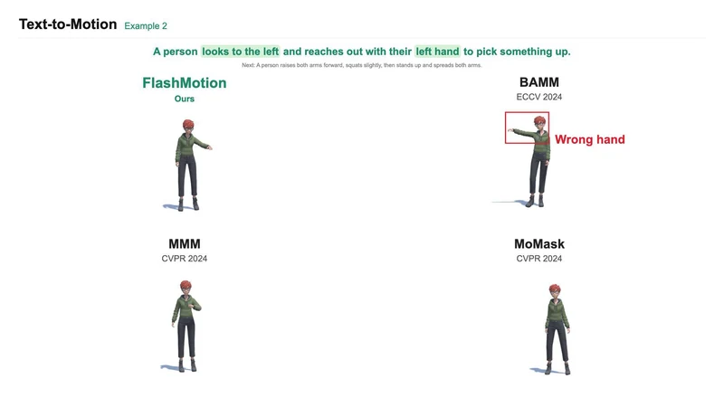
Text-to-Motion · Example 2BAMM, MMM, and MoMask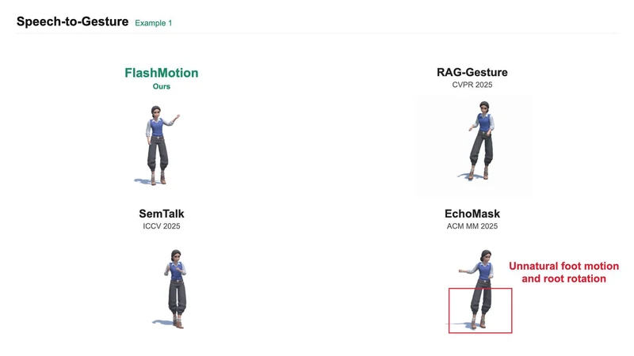
Speech-to-Gesture · Example 1RAG-Gesture, SemTalk, and EchoMask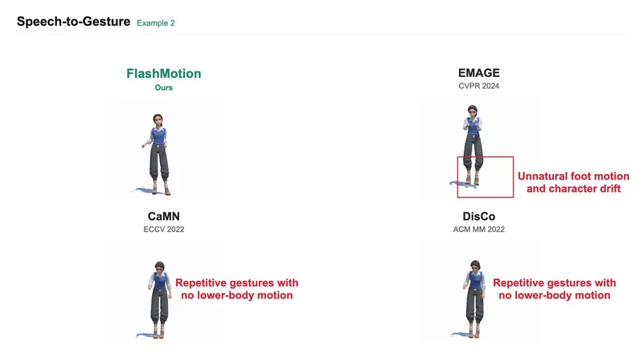
Speech-to-Gesture · Example 2EMAGE, CaMN, and DisCo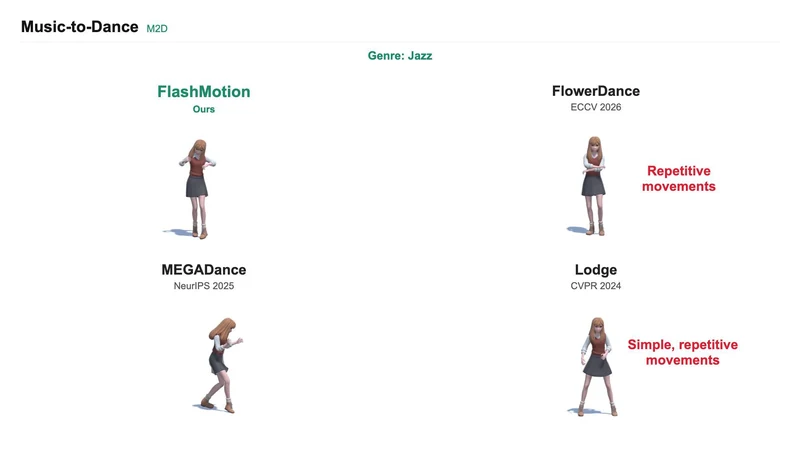
Music-to-Dance · JazzFlowerDance, MEGADance, and Lodge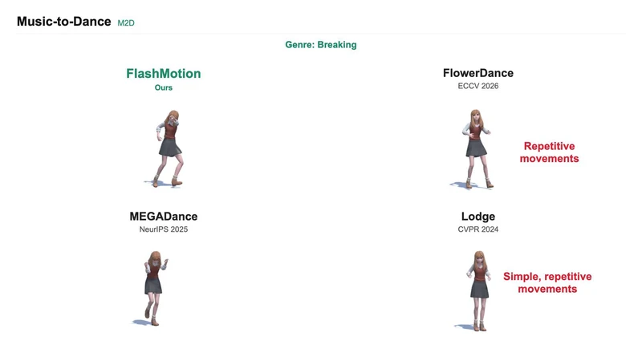
Music-to-Dance · BreakingFlowerDance, MEGADance, and Lodge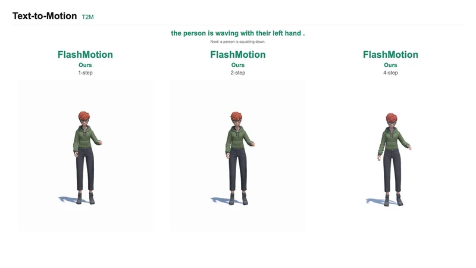
Text-to-Motion1, 2, and 4 sampling steps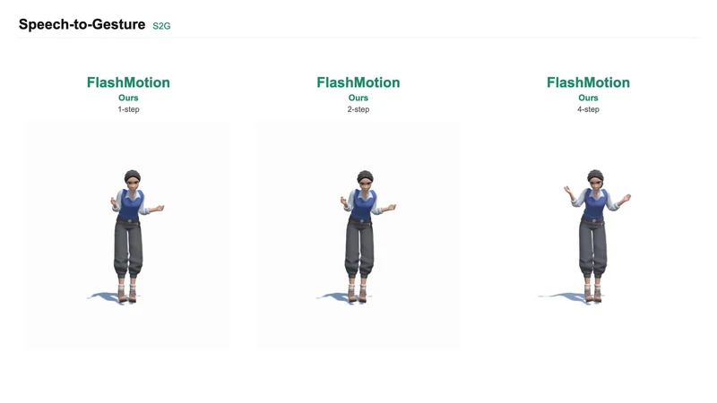
Speech-to-Gesture1, 2, and 4 sampling steps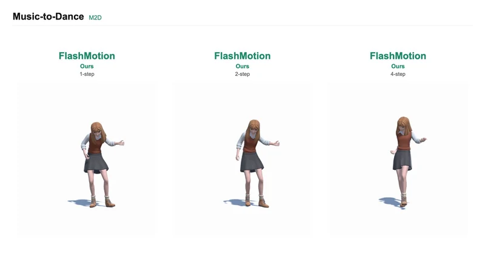
Music-to-Dance1, 2, and 4 sampling steps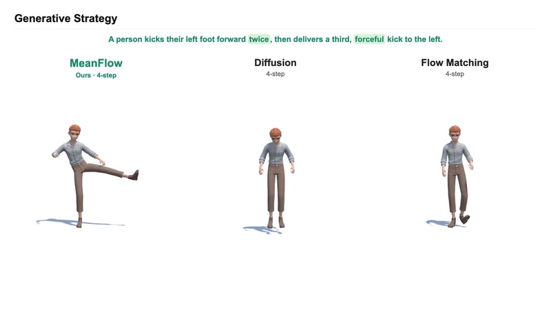
Generative strategyMeanFlow, diffusion, and flow matching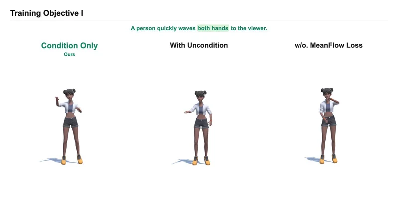
Training objective IConditional training and MeanFlow loss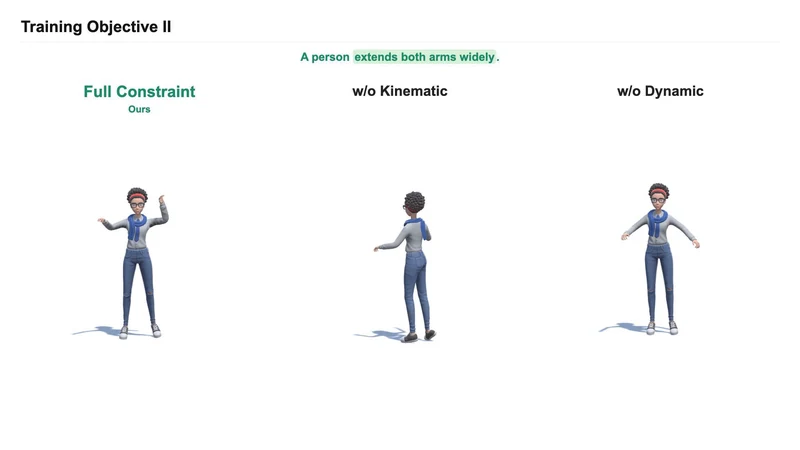
Training objective IIKinematic and dynamic constraints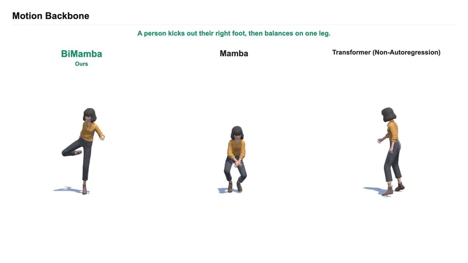
Motion backboneBiMamba, Mamba, and Transformer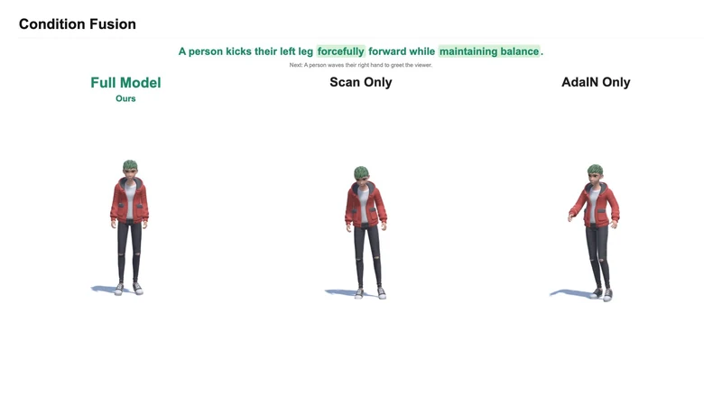
Condition fusionState selection and AdaIN fusion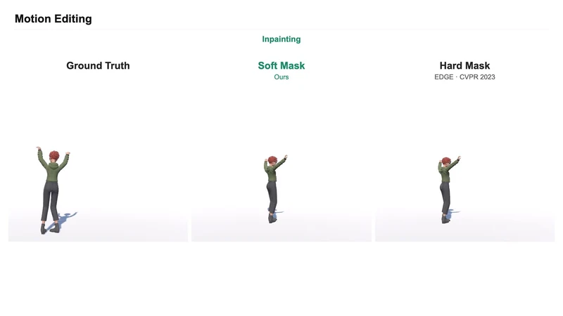
Soft-mask motion inpaintingA time-decayed soft mask blends known and generated motion during sampling. This excerpt compares its inpainting transitions with a fixed hard mask.05 / Applications
Generated motion drives robot simulation, XR characters, and a mobile avatar.
06 / Reference
@misc{yang2026flashmotion,
title={FlashMotion: Ultra-Fast Long-Term 3D Motion Generation},
author={Yang, Kaixing and Tang, Xulong and Li, Ronghui and Zhang, Xiangyue and
Peng, Ziqiao and Luo, Mingshuang and Zhao, Chenxi and Wu, Haoyu and
Fan, Ju and Liu, Hongyan and Wang, Puwei and Zeng, Zijiao and He, Jun},
year={2026},
eprint={2611.13626},
archivePrefix={arXiv},
primaryClass={cs.CV},
url={https://arxiv.org/abs/2611.13626}
}